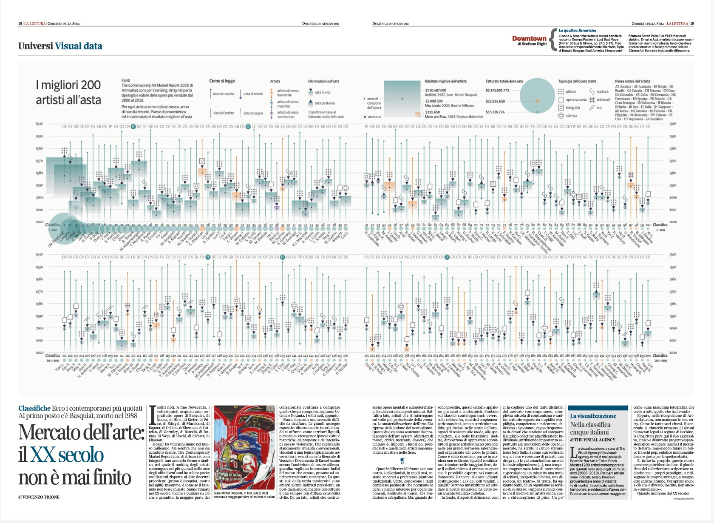
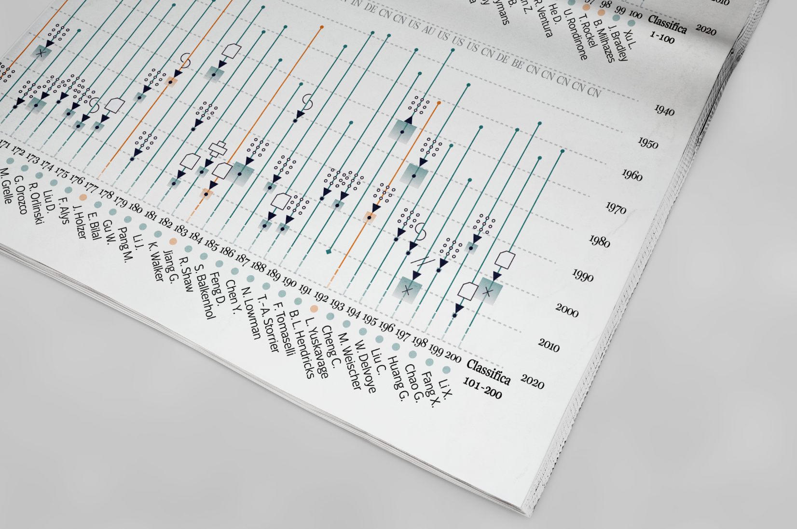
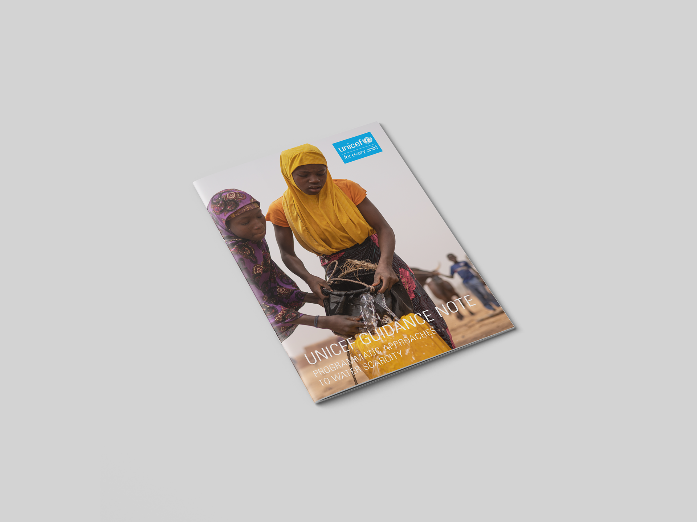

Client Work
the trustees: climate resilience report
per la lettura: 200 artisti di arte contemporanea
unicef guidance note

The trustees: climate resilience report
* Project Overview*
I was commissioned to research, write, and design a 60 page custom report on methods for communicating climate resilience through data visualization and digital tools in a 14-week time period. I worked with a project team of climate scientists at the Trustees of Reservations. As the sole designer, I examined current design strategies for communication, led brainstorming sessions with the team, managed and oversaw the the project timeline, met with subject matter experts, and ultimately made recommendations on strategies for extending their existing communication efforts around climate change and resilience.
I created custom mockups for a State of the Coast re-design strategy, and a 3d modeling viewer.


I also worked closely with the tema to define the 3 thematic areas covered in the book, and developed custom infographics for each:
- Coastal Resilience
- Carbon Sequestration
- Urban Tree Canopy


Per la lettura: 200 artisti di arte contemporanea
* Project Overview *
Infographic designed for La Lettura (Corriere della Sera) to showcase the top 200 contemporary artists in the last 20 years. Data sources: The Contemporary Art Market Report 2020 (for the artist ranking) and ArtMarket.com (for the artist classification). Myself and my partner Beatrice Bazzan (@TheVisualAgency) conducted the research, data analysis, and design for this glyph-based data visualization. Published on Sunday June 20th 2021.
 
Unicef guidance note
* Project Overview*
Designed charts and implemented a layout on a team of two designers at The Visual Agency for the Unicef Guidance Note on Programmatic Approaches to Water Scarcity. The project was completed on a tight deadline (one week) and according to client specific style needs.



Click here to view the full paper.